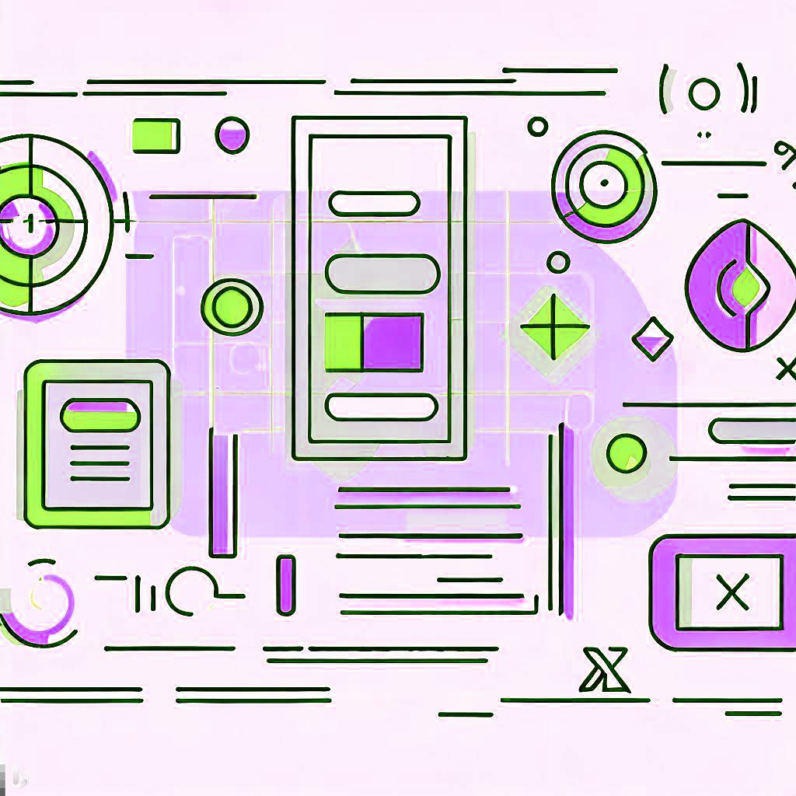

<article class="_container_all">
  <section class="_container">
    <div class="_container_title">
      <mat-icon class="_icon_nav">local_florist</mat-icon>
      <h1 class="_title">designing</h1>
    </div>
    <div class="_container_cards">
      <section class="_container_item" (click)="showMoreUxUi()">
        <h2 class="_item" >
          ux | ui
        </h2>
      </section>
      <div class="_container_info" [hidden]="!visibleUxUi">

        <p class="_info">
          <span>UX/UI</span> is the design of the <span>user experience, and interface 
        of a digital product.</span> It combines aspects such as <span>research, 
        testing, development, content and prototyping to create solutions</span> 
        that meet the needs and expectations of users. It also designs the 
        <span>visual and interactive elements</span> that facilitate and enrich the 
        navigation and use of the product.
        </p>
        <div class="_container_image">
          
        </div>
        <figure class="_container_realizations">
          <div class="_container_realization" (click)="routingVlife()">
            
            <p class="_name_realization">v-life</p>
          </div>
          <div class="_container_realization">
            
            <p class="_name_realization">travel-log</p>
          </div>
          <div class="_container_realization">
            
            <p class="_name_realization">nighx</p>
          </div>
          <div class="_container_realization">
            
            <p class="_name_realization">hunt</p>
          </div>   
        </figure><hr>
      </div>
      <article class="_container_all_info">
        <section class="_container_item" (click)="showMoreGraph()">
          <h2 class="_item" >
            graphic
          </h2>
        </section>
          <div class="_container_info" [hidden]="!visibleGraph">       
            <p class="_info"><span>Graphic Design </span>
              - Profession and academic discipline whose activity consists of 
              <span>projecting visual communication</span> aimed at
              <span>broadcast specific messages</span> to social groups with <span>targets
              determined. It is applied to produce a homogeneous brand discourse generating
              visual identity</span> to people, products or services.
            </p>
          </div>
        </article>

      <section class="_container_item" (click)="showMoreIllustration()">
        <h2 class="_item" >
          motion
        </h2>
      </section>

      <div class="_container_info" [hidden]="!visibleIllustration">
        <p class="_info">
          The term experimentation, its application and its purpose were born in the <span>world of science.</span>
          Experimentation is understood as <span>inquiry based on voluntary provocation</span>
          of certain phenomena to confirm some hypothesis.
          Experimentation is the <span>directed observation </span> that completes the <span> spontaneous observation.</span>
        </p>
       
        <div class="_container_button">
          <button class="_button_more" routerLink="illustration-sketch">
            <mat-icon class="_icon_button">work_outline</mat-icon>portafolio
          </button>
        </div>
        <figure class="_container_realizations">

        </figure>
      </div>
    </div>
    <app-footer class="_footer"></app-footer>
  </section>
</article>